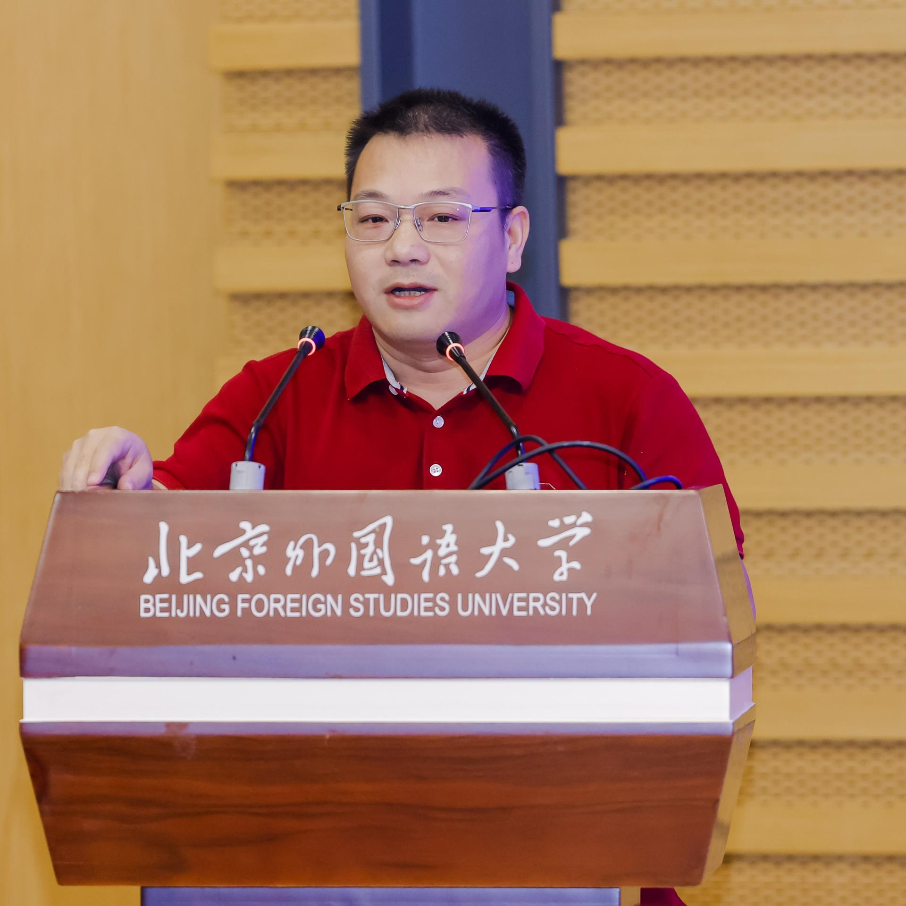

师资队伍

助理教授/讲师

深圳大学传播学院师资力量雄厚，梯队完备。目前有专任教师58人，其中正教授15人，博士生导师14人，国家教学名师、教育部教指委、省级教学名师、广东省千百十人才等9人。其中既有老一辈代表性学者何道宽教授、吴予敏教授、辜晓进教授等，也有中生代的知名学者王晓华教授、丁未教授、尹连根教授等，更有年青学者代表周裕琼教授、李明伟教授、常江教授等。
-
58专职教师
-
15正教授
-
14博士生导师
师资队伍
-
李辉/助理教授个人简历：李辉，深圳大学传播学院助理教授。西南大学文学学士，厦门大学新闻传播学院传播学博士，美国伊利诺伊州香槟分校联合培养博士（2010年8月-2012年8月）。2019年入职中山大学媒体与设计学院，任博士后/副研究员。2019年8月-2020年9月，借调中国网络空间研究院从事网信智库相关研究工作。2022年5月入职深圳大学传播学院，现任深圳市人文社科重点研究基地深圳城市传播创新研究中心常务副主任。研究领域：传播思想史、文化...研究领域：传播思想史、文化研究、互联网国家治理、国际传播
-
李梓音/讲师个人简历：李梓音，深圳大学传播学院全职授课教师。主要研究领域包括数据新闻与可视化、数据研究与批评数据研究等。云南大学工学学士（数字媒体技术），浙江大学工程硕士（软件工程），丹麦哥本哈根大学（CTS中心）联合培养博士生（国家留学基金委员会公派），浙江大学文学博士（新闻传播学）。2024年7月加入深圳大学传播学院，现任网络与新媒体系全职授课教师。 开设课程：2024-2025 秋：《人机交互设计》、《互联网程序设计：...研究领域：数据新闻与可视化、数据研究与批评数据研究
-
李炳灿/助理教授个人简历：李炳灿，深圳大学广告系助理教授。河南师范大学心理学学士，首都师范大学基础心理学硕士，北京大学应用心理学博士。2024年8月加入深圳大学传播学院，现任广告系助理教授。近年来发表多篇SCI及SSCI期刊论文。文章发表在Psychophysiology,Behavioral Sciences,European Journal of Psychology of Education等杂志中。参与多项国家自然科学基金项目和北京大学校企合作项目，为包括华为、荣耀、大益集团、平安保险公司等...研究领域：移动营销、消费心理学、神经营销学
-
刘松吟/助理教授个人简历：刘松吟，深圳大学传播学院网络与新媒体系助理教授。北京大学理学学士、经济学学士，北京大学新闻与传播硕士，英国伦敦政治经济学院哲学博士（媒介与传播，2023）。近年以第一作者/通讯作者发表多篇SSCI/CSSCI期刊论文。论文与学术作品发表于Social Problems，China Quarterly，《新闻与写作》，《文艺理论与批评》等期刊。论文曾被人大复印报刊资料《新闻与传播》全文转载。研究领域：文化研究、批判理论、媒介社会学、数字新闻、跨文化传播
-
聂鑫/助理教授个人简历：聂鑫，兰州大学管理学学士、香港中文大学社会学系硕士、中山大学政治学博士（政治传播方向）。现任深圳大学传播学院新闻系助理教授。主要研究领域：政治传播、舆论极化、互联网内容治理、大数据舆情分析期刊论文：1.张志安,聂鑫*.(2022).互联网平台社会语境下网络内容治理机制研究.中国编辑.05:4-10.2.张志安,聂鑫*.(2021).融合时代中国受众类型变迁与数字生活兼谈平台社会的受众研究.新闻与写作.05:68-76.3.张志安,...研究领域：政治传播、舆论极化、互联网内容治理、大数据舆情分析
-
彭祎祎/讲师个人简历：深圳大学传播学院广告系教师，也是一位美术背景的资深广告人，曾在国际、本土4A公司工作九年，从业期间收获了长城奖、金印奖、纽约广告节等国内外广告节金银铜奖，个人吉祥物设计也多次被官方采用。主要教研领域广告创意表现、品牌整合设计与推广、设计创新思维执教课程《平面广告创意与设计》、《品牌整合设计》、《设计思维与方法》等专业课程教研成果:发表论文普刊 9 篇，核心期刊 1 篇，发明专利 1 项 ，指导学生广...研究领域：广告创意表现、品牌整合设计与推广、设计创新思维
-
史旻昱/讲师个人简历：1997-2001，华中科技大学计算机科学与技术学院，本科2001-2004，华中科技大学新闻与信息传播学院，硕士2004-2008，管理学院，博士主要研究领域：数字营销、文化创意产业开设主要课程：数据抓取与清洗、新媒体概论近期主持的科研项目：品牌延伸理论视角下的IP电影研究教育部深圳市宣传文化事业发展专项基金2023年度项目绩效评估，市委宣传部书香深圳测评体系——基于全民阅读的研究，深圳出版集团光明区市民文明素养摸...研究领域：数字营销、文化创意产业
-
汪臻真/助理教授个人简历：于2015年在香港城市大学取得博士学位，曾就职于香港Openrice有限公司，香港城市大学商学院管理科学系，腾讯广告营销与服务线。研究领域： 计算广告，社会网络分析，文献计量学开设主要课程：计算广告导论近期主持和参与科研项目：广告多次多点多样曝光的影响机制研究近五年发表论著：期刊：汪臻真, 朱志华, 蔡政. (2020). 计算广告中的效果衡量方法. 中国网络传播研究.Jiang, L. C., Wang, Z. Z., Peng, T. –Q., & Z...研究领域：计算广告、社会网络分析、文献计量学
-
吴汶萱/讲师个人简历：吴汶萱，讲师，主讲《设计基础》等课程研究领域：设计基础
-
吴怿/助理教授个人简历：工作经历 中山大学传播与设计学院 博士后 2020.12-至今南方都市报 记者 2009.10-2014.12教育背景香港城市大学 2015.1-2020.10 博士，媒体与传播系（博士论文：《社会矛盾后果：香港民意极化与媒体》）复旦大学2006.9-2009.7 硕士，新闻学院2002.9-2006.7 学士，新闻学院教学经历中山大学，传播与设计学院 硕士研究生必修课《社会网络分析》，任课教师香港浸会大学，新闻系博士研究生课程《社会网络...研究领域：政治传播、媒介效果、网络舆论
-
王童辰/助理教授个人简历：王童辰，中山大学文学学士、文学硕士，中山大学法学博士（政治传播学）。曾任广州广播电视台双语出镜记者，广州大学新闻与传播学院讲师。现任深圳大学传播学院助理教授。主要研究领域：健康传播、国际传播、政治传播、计算传播等。开设主要课程：本科生：《国际传播》《视听节目创意与策划》《数据处理与SPSS 应用》等。研究生：《新闻传播学研究方法》《传播统计学》《健康传播理论》《健康传播研究前沿》等。近期主...研究领域：健康传播、国际传播、政治传播、计算传播
-
钟书平/讲师个人简历：钟书平，广告学博士，本科毕业于广东外语外贸大学英语专业，硕士毕业于北京大学光华管理学院工商管理专业，博士毕业于中国传媒大学广告学院。曾就职于法国阳狮集团星传媒体，拥有丰富的广告策划与媒体管理经验。主要研究领域：计算广告、广告实务开设主要课程：《品牌建构与传播》、《广告策划》、《媒体策略》、《新媒体广告前沿》近期主持的科研项目：1.项目: 主持,钟书平,国际专业认证背景下广告学专业课程体系改...研究领域：计算广告、广告实务